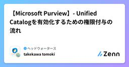
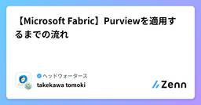
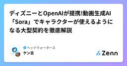
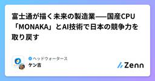
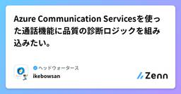
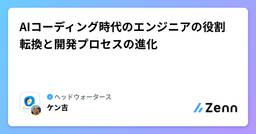
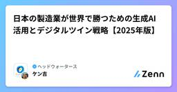
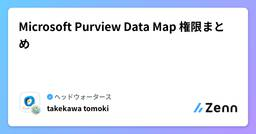
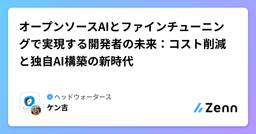
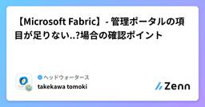

ヘッドウォータースのフィード
https://zenn.dev/p/headwaters
株式会社ヘッドウォータースのテックブログです。 AIエージェント、生成AI、LLM、Azureのサービスや資格、IoT、XR系などData&AIとApp modernizeに関して幅広く投稿します！
フィード

【Microsoft Purview】- Unified Catalogを有効化するための権限付与の流れ
ヘッドウォータースのフィード
執筆日2025/12/13 手順Microsoft Purview を開く歯車を選択し、役割とスコープ をクリック役割とスコープ>役割グループをクリックData Governanceをクリック編集 をクリックユーザーの選択をクリック追加したいユーザーを追加歯車を選択し、役割とスコープ をクリックソリューションの設定>統一カタログをクリックRoles and permissionsをクリックし、データガバナンス管理者にユーザーを追加ソシューション>統一カタログをクリックカタログ管理>ガバ...
3時間前
ラズパイとArduinoで使えるインターフェースのまとめ
ヘッドウォータースのフィード
ラズパイとarduinoのそれぞれで使えるIFが複数ありますが、各インターフェースがどのようなものなのかよく分からなかったので概要までまとめてみました インターフェース一覧まずそれぞれで使える一覧のまとめですが、以下のようになります名前区分主な用途rasberry piarduino開発年開発者（企業）SSHリモート接続CUIで本体を操作する〇×1995年タトュ・ウルネン (Tatu Ylönen)VNCリモート接続GUIで本体を操作する〇×1998年頃Olivetti & Oracle Research Lab...
13時間前

【Microsoft Fabric】Purviewを適用するまでの流れ
ヘッドウォータースのフィード
執筆日2025/12/13 ざっくり流れPurviewをデプロイPurview→Fabricの接続Fabric→Purviewの接続Fabric↔Purview の接続確認 PurviewをデプロイAzure Portal上でPurviewをデプロイhttps://zenn.dev/headwaters/articles/f10294738bd56cPurview>Root collection permission > +Add root collection admin からPurviewを操作するユーザーを追加 Pur...
13時間前

ディズニーとOpenAIが提携!動画生成AI「Sora」でキャラクターが使えるようになる大型契約を徹底解説
ヘッドウォータースのフィード
2025年12月、ディズニーとOpenAIが歴史的な提携を発表しました。ディズニーは10億ドル（約1550億円）を出資し、OpenAIの動画生成AI「Sora」の初の大手コンテンツライセンスパートナーとなります。2026年初頭から、ミッキーマウスやアイアンマン、ダース・ベイダーなど200以上のディズニー関連キャラクターを使って、誰でも短編動画を生成できるようになります。さらに、優秀な作品はDisney+で配信される予定です。この提携により、ファンは自分だけのディズニー物語を創造できるようになり、エンターテインメントの新時代が幕を開けます。https://www.itmedia.co...
2日前

富士通が描く未来の製造業——国産CPU「MONAKA」とAI技術で日本の競争力を取り戻す
ヘッドウォータースのフィード
富士通が製造業のDX（デジタルトランスフォーメーション）を支援する次世代技術を発表しました。核となるのは、2027年投入予定の国産CPU「MONAKA」と、工場でも使える軽量AI技術です。従来、製造現場へのAI導入は「機密情報の漏洩リスク」「電力・設備の制約」「突発的な状況への対応力不足」といった課題がありました。富士通はこれらを解決するため、自社管理下で安全に使える「ソブリンAIプラットフォーム」、AIへの攻撃を防ぐセキュリティ技術、そして省電力で動く次世代CPU「MONAKA」と1ビット量子化技術を開発。さらに、ロボットが数秒先の未来を予測して動く「空間World Model技...
3日前

Azure Communication Servicesを使った通話機能に品質の診断ロジックを組み込みたい。
ヘッドウォータースのフィード
Azure Portal上で、Log Analyticsを連携すれば見ることができるが、エラーになるタイミングでWebアプリ上にも見せたい。診断系の機能がいくつかあるので紹介 通話前診断!まだプレビュー機能のようです..https://learn.microsoft.com/ja-jp/azure/communication-services/concepts/voice-video-calling/pre-call-diagnostics?utm_source=chatgpt.comこの機能では、以下の情報を取得できます。各デバイス(カメラ・マイク・スピーカー)へ...
3日前

AIコーディング時代のエンジニアの役割転換と開発プロセスの進化 1
1
ヘッドウォータースのフィード
生成AIによるコーディング支援が急速に普及し、エンジニアの役割が大きく変化しています。GitHub Copilotなどのツールが新規開発者の80%に利用される中、エンジニアの主戦場は「コードを書くこと」から「仕様を定義し、AIエージェントを統率すること」へ移行しつつあります。AWSが提唱する新しい開発スタイルでは、ビジネス職が高速でプロトタイプを作成し、エンジニアが本番運用可能なシステムへと昇華させます。複数の自律型AIエージェントを活用した開発手法により、エンジニアには幅広い技術知識とマネジメント能力が求められるようになります。https://www.itmedia.co.jp...
4日前

日本の製造業が世界で勝つための生成AI活用とデジタルツイン戦略【2025年版】
ヘッドウォータースのフィード
日本の製造業は、生成AI技術とデジタルツインを活用したDX（デジタルトランスフォーメーション）の重要な転換点に立っています。東京大学、東京科学大学、ロート製薬の専門家たちが指摘する最大の課題は、データ管理プラットフォームの構築です。特に、製造データを海外プラットフォームに依存せず、国産インフラで安全に管理する仕組みが急務とされています。一方で、日本企業特有の「すり合わせ文化」や「属人的業務」を強みとして活かすシステム設計の重要性も強調されました。成功には、理論だけでなく具体的な実装事例の積み重ねが不可欠であり、産学連携による継続的な取り組みが求められています。https://dc...
5日前
AzureのMarketPlaceでArangoDBを触る
ヘッドウォータースのフィード
ArangoDBとはArangoDBは“マルチモデルデータベース”と呼ばれ、1つのエンジンで「ドキュメント」「グラフ」「KV」「全文検索（ArangoSearch）」を扱えるデータベースです。なぜ、マルチモデルDBが良いかというと、リソースがArangoDBだけで済む、データ同期・ETL・複数DB運用が不要となります。データ一般に使うDBArangoDBの場合構造化データ（JSON）MongoDB同じDB内グラフ（KG）Neo4j / Nebula同じDB内検索/ベクトルElasticsearch / WeaviateArangoS...
5日前

Microsoft Purview Data Map 権限まとめ
ヘッドウォータースのフィード
執筆日2025/12/08 まとめることMicrosoft PurviewのData Mapを検証しています。そこで現れたロールの割り当て。各権限が何ができるかをまとめていこうかなと。 参考資料https://learn.microsoft.com/ja-jp/purview/data-map-domains-collections-manage#add-roles-and-restrict-access Purview Data Mapの構造イメージドメイン └─ コレクション ├─ サブコレクション │ └─ データ資産（...
5日前

オープンソースAIとファインチューニングで実現する開発者の未来：コスト削減と独自AI構築の新時代
ヘッドウォータースのフィード
AI業界では、OpenAIやAnthropicなどの大手企業が巨額の投資を行ってきましたが、その基盤モデルの競争は限界に達しつつあります。一方で、DeepSeekやAlibabaなどのオープンソースAI企業が、低コストで高性能なモデルを提供し始めています。この記事では、オープンソースAIの台頭と、ファインチューニング技術が開発者とビジネスにもたらす革新的な可能性について解説します。ファインチューニングにより、企業は汎用AIモデルを自社の特定業務に最適化でき、単なる「AIラッパー」から真の「AI所有者」へと進化できます。https://forbesjapan.com/articles...
6日前

【Microsoft Fabric】- 管理ポータルの項目が足りない..?場合の確認ポイント
ヘッドウォータースのフィード
執筆日2025/12/07 発生事象Microsoft PurviewをFabricに接続しようとしていました。https://learn.microsoft.com/ja-jp/purview/register-scan-fabric-tenant?context=%2Ffabric%2Fgovernance%2Fcontext%2Fcontext-purview&tabs=Scenario1#register-fabric-tenantその際にMicrosoft Fabricの管理ポータルを開くと、あれ？なんか項目が少ない... 解消方法EntraI...
6日前
クラウド・バイ・デフォルト原則 とは？
ヘッドウォータースのフィード
執筆日2025/12/06 執筆背景社内メンバーと雑談していた際、「クラウド・バイ・デフォルト原則」という言葉を耳にしました。普段からクラウドサービスを利用する機会は多いものの、「原則」としてどう位置づけられているのか、またその背景や具体的な運用ルールについては詳しく知らなかったため、改めて調べてみることにしました。 参考資料デジタル庁「クラウド・バイ・デフォルト原則」比較表https://www.digital.go.jp/assets/contents/node/basic_page/field_ref_resources/44df7733-3df2-4e47...
8日前

【Azure】- Microsoft Purviewを作成する際のポイント
ヘッドウォータースのフィード
執筆日2025/12/05 起きたことAzure Portal>Microsoft Purview アカウントでPurviewを作成しようとしたところ。あれ...できない.. 解決方法MarketPlace経由で作成する 手順Marketplaceを開くMicrosoft Purviewと検索し、Microsoft Purviewをクリックサブスクリプションを選び、作成をクリック必要なパラメータを入力し、Microsoft Purviewを作成
8日前
バイオDXとは？AI・ロボットで変わるバイオテクノロジー研究開発の全貌と実務活用法
ヘッドウォータースのフィード
バイオDX（Bio-Digital Transformation）は、バイオテクノロジー領域におけるAIやロボットなどを活用した自動化・効率化の取り組みです。従来のバイオ研究は厳格な規制、24時間体制の細胞管理、膨大なデータ解析など、研究者への負担が極めて重い分野でした。2018年のAlphaFold登場を契機に、AI技術によるタンパク質構造予測が飛躍的に進化。日本でも2021年から文部科学省主導でバイオDXが推進され、創薬、物質生産、ゲノム育種などの分野で自動化研究が加速しています。米国を中心に各国で研究投資が増加しており、今後のバイオテクノロジー産業を変革する重要な技術領域とし...
9日前
AI導入格差が企業の未来を分ける―成功企業が選ぶ次世代AI活用戦略
ヘッドウォータースのフィード
日本企業の約4割が生成AIを導入済みで、AI活用は「定型業務」から「企画創造などの非定型業務」へと主戦場が移行しています。業界・部門によって活用レベルに大きな差があり、情報・専門サービス業や研究開発部門が先行しています。AI導入の課題は初期段階では「コスト・ROI」、活用段階では「セキュリティ・データ品質」へと変化します。すでに成功体験を持つ企業ほど今後の投資意向が高く、AI導入格差が拡大する傾向にあります。https://www.nri.com/jp/media/column/extending_society_with_ai/20251203.html 深掘り 深掘りを...
10日前
Code execution with MCP: Building more efficient agentsを読んでみる
ヘッドウォータースのフィード
本投稿について本記事は、Anthropic社が公開されているEngineering at Anthropic: Inside the team building reliable AI systemsのガイド記事を読んでAI Agent開発の知見を高め、共有していくための記事となります。記事中のわかりにくい用語に関しては、脚注を加えております。本投稿記事で誤りがございましたら、コメントいただけると幸いです。 サマリーMCPはエージェントが多くのツールやシステムに接続するための基礎プロトコルを提供します。しかし、接続されたサーバーが多すぎると、ツールの定義や結果が過剰なトー...
10日前
サービスプリンシパルでaz loginする際の注意点
ヘッドウォータースのフィード
問題事象下記記事を参考にGithub ActionsでAzure Container RegistryにContainerイメージのビルド＆プッシュを試そうとしたのですが、なぜか動きませんでした。https://learn.microsoft.com/ja-jp/azure/container-instances/container-instances-github-action原因を追ってみると、そもそもサービスプリンシパルの情報でaz loginが出来ないことが分かりました。 サービスプリンシパルとはザックリいうと、人ではないアプリケーション（今回でいうとGithub...
11日前
GoogleのAIショッピング機能を徹底解説|便利さの裏に潜む仕掛けと賢い対処法
ヘッドウォータースのフィード
Googleが発表した3つの新AIショッピング機能は、買い物を便利にする一方で、消費者の判断力を奪う可能性があります。AI検索からの直接購入、店舗在庫の自動確認、代理チェックアウト機能により、購入までの「摩擦」が徹底的に排除されています。しかし、この便利さの裏には、ユーザーに「迷う時間」を与えず、最短距離で決済させる仕組みが隠されています。AIは中立なアシスタントを装っていますが、実際には広告収益を目的としたビジネスモデルの一環です。賢い消費者として、AIに判断を委ねすぎず、比較検討する時間を確保することが重要です。https://www.lifehacker.jp/article...
11日前
日清製粉ウェルナのAI需給管理システム導入事例から学ぶDX実践ガイド【物流2024年問題への挑戦】
ヘッドウォータースのフィード
日清製粉ウェルナは、冷凍食品400品目の需給管理を自動化するAIシステムを開発し、計画策定時間を3日から1日に短縮することに成功しました。物流2024年問題に直面する中、熟練担当者の暗黙知を言語化し、AIに定型作業を任せ、人はイレギュラー対応に集中する役割分担を実現。開発パートナーのグリッドと20カ月にわたる密なコミュニケーションを重ね、業務担当者の熱意を確認したうえでプロジェクトを推進しました。AIに100%を求めず、人との協働を前提とした設計思想が、実用的なシステム構築の鍵となっています。https://dcross.impress.co.jp/docs/column/colu...
12日前